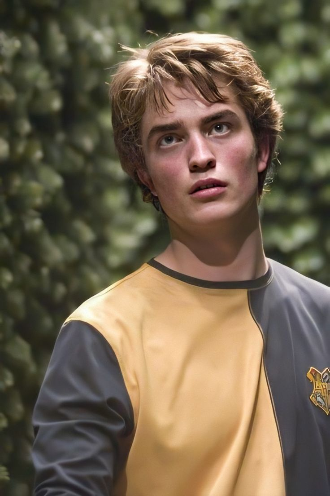

Hufflepuff
Helga Hufflepuff

La Casa Hufflepuff es una de las cuatro casas en la escuela de magia Hogwarts. Fundada por Helga Hufflepuff, esta casa valora la lealtad, la paciencia y la bondad en sus estudiantes. Los miembros de Hufflepuff son conocidos por su amabilidad y su disposición para ayudar a los demás. A diferencia de otras casas, Hufflepuff no busca la gloria o el reconocimiento individual, sino que fomenta el trabajo en equipo y el apoyo mutuo. Los colores de la casa son amarillo y negro, y su animal representativo es el tejón. A lo largo de la historia de Hogwarts, Hufflepuff ha sido el hogar de muchos magos y brujas que destacan por su ética de trabajo y su compromiso con la igualdad y la justicia en el mundo mágico.
Un alumno de Hufflepuff suele ser conocido por su bondad y su disposición para ayudar a los demás, mostrando una lealtad inquebrantable hacia sus amigos y compañeros. Su paciencia y su naturaleza compasiva los convierten en personas confiables y solidarias en todo momento. Aunque a veces se subestima su valía debido a su enfoque en la igualdad y la cooperación en lugar de la ambición individual, los Hufflepuffs poseen una fuerza interior admirable. Su determinación para hacer lo correcto y defender sus valores los distingue, demostrando que la verdadera grandeza no siempre se manifiesta en la búsqueda del poder, sino en el compromiso con los demás y la búsqueda de la justicia y la igualdad para todos.
La sala común de Hufflepuff está ubicada en las mazmorras de Hogwarts, detrás de una puerta en el sótano del castillo.

Helga Hufflepuff
Cedric Diggory
Newt Scamander

Nymphadora Tonks
Pomona Sprout